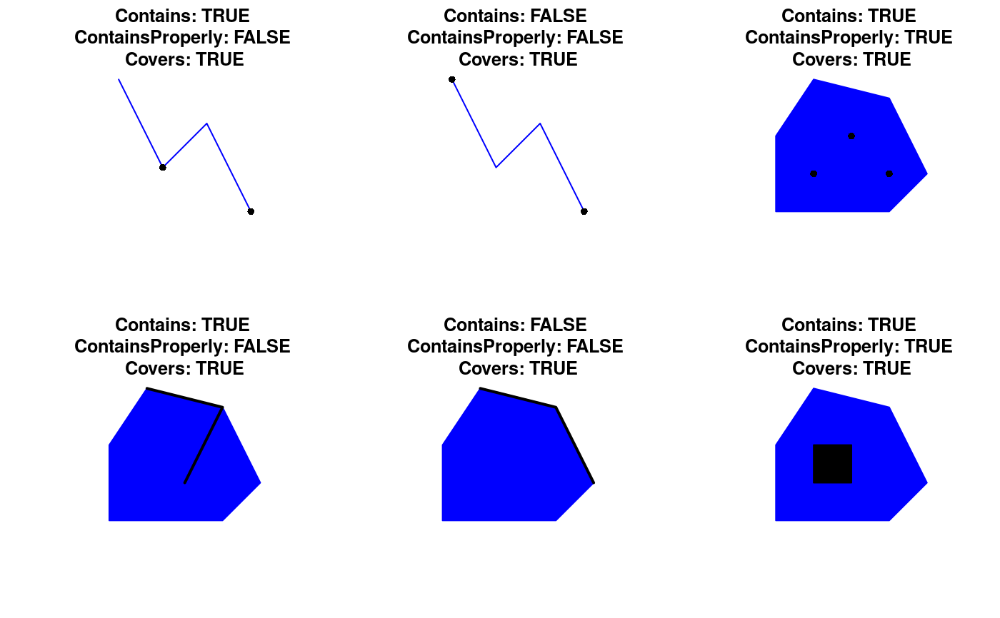

pred-binary-gContains.RdFunctions for testing whether one geometry contains or is contained within another geometry
gContains(spgeom1, spgeom2 = NULL, byid = FALSE, prepared=TRUE, returnDense=TRUE, STRsubset=FALSE, checkValidity=FALSE) gContainsProperly(spgeom1, spgeom2 = NULL, byid = FALSE, returnDense=TRUE, checkValidity=FALSE) gCovers(spgeom1, spgeom2 = NULL, byid = FALSE, returnDense=TRUE, checkValidity=FALSE) gCoveredBy(spgeom1, spgeom2 = NULL, byid = FALSE, returnDense=TRUE, checkValidity=FALSE) gWithin(spgeom1, spgeom2 = NULL, byid = FALSE, returnDense=TRUE, checkValidity=FALSE)
| spgeom1, spgeom2 | sp objects as defined in package sp. If spgeom2 is NULL then spgeom1 is compared to itself. |
|---|---|
| byid | Logical vector determining if the function should be applied across ids (TRUE) or the entire object (FALSE) for spgeom1 and spgeom2 |
| prepared | Logical determining if prepared geometry (spatially indexed) version of the GEOS function should be used. In general prepared geometries should be faster than the alternative. |
| returnDense | default TRUE, if false returns a list of the length of spgeom1 of integer vectors listing the |
| checkValidity | default FALSE; error meesages from GEOS do not say clearly which object fails if a topology exception is encountered. If this argument is TRUE, |
| STRsubset | logical argument for future use |
gContains returns TRUE if none of the point of spgeom2 is outside of spgeom1 and at least one point of spgeom2 falls within spgeom1.
gContainsProperly returns TRUE under the same conditions as gContains with the additional requirement that spgeom2 does not intersect with the boundary of spgeom1. As such any given geometry will Contain itself but will not ContainProperly itself.
gCovers returns TRUE if no point in spgeom2 is outside of spgeom1. This is slightly different from gContains as it does not require a point within spgeom1 which can be an issue as boundaries are not considered to be "within" a geometry, see gBoundary for specifics of geometry boundaries.
gCoveredBy is the converse of gCovers and is equivalent to swapping spgeom1 and spgeom2.
gWithin is the converse of gContains and is equivalent to swapping spgeom1 and spgeom2.
Error messages from GEOS, in particular topology exceptions, report 0-based object order, so geom 0 is spgeom1, and geom 1 is spgeom2.
Helpful information on the subtle differences between these functions: http://lin-ear-th-inking.blogspot.com/2007/06/subtleties-of-ogc-covers-spatial.html
l1 = readWKT("LINESTRING(0 3,1 1,2 2,3 0)") l2 = readWKT("LINESTRING(1 3.5,3 3,2 1)") l3 = readWKT("LINESTRING(1 3.5,3 3,4 1)") pt1 = readWKT("MULTIPOINT(1 1,3 0)") pt2 = readWKT("MULTIPOINT(0 3,3 0)") pt3 = readWKT("MULTIPOINT(1 1,2 2,3 1)") p1 = readWKT("POLYGON((0 0,0 2,1 3.5,3 3,4 1,3 0,0 0))") p2 = readWKT("POLYGON((1 1,1 2,2 2,2 1,1 1))") par(mfrow=c(2,3)) plot(l1,col='blue');plot(pt1,add=TRUE,pch=16) title(paste("Contains:",gContains(l1,pt1), "\nContainsProperly:",gContainsProperly(l1,pt1), "\nCovers:",gCovers(l1,pt1))) plot(l1,col='blue');plot(pt2,add=TRUE,pch=16) title(paste("Contains:",gContains(l1,pt2), "\nContainsProperly:",gContainsProperly(l1,pt2), "\nCovers:",gCovers(l1,pt2))) plot(p1,col='blue',border='blue');plot(pt3,add=TRUE,pch=16) title(paste("Contains:",gContains(p1,pt3), "\nContainsProperly:",gContainsProperly(p1,pt3), "\nCovers:",gCovers(p1,pt3))) plot(p1,col='blue',border='blue');plot(l2,lwd=2,add=TRUE,pch=16) title(paste("Contains:",gContains(p1,l2), "\nContainsProperly:",gContainsProperly(p1,l2), "\nCovers:",gCovers(p1,l2))) plot(p1,col='blue',border='blue');plot(l3,lwd=2,add=TRUE,pch=16) title(paste("Contains:",gContains(p1,l3), "\nContainsProperly:",gContainsProperly(p1,l3), "\nCovers:",gCovers(p1,l3))) plot(p1,col='blue',border='blue');plot(p2,col='black',add=TRUE,pch=16)title(paste("Contains:",gContains(p1,p2), "\nContainsProperly:",gContainsProperly(p1,p2), "\nCovers:",gCovers(p1,p2)))